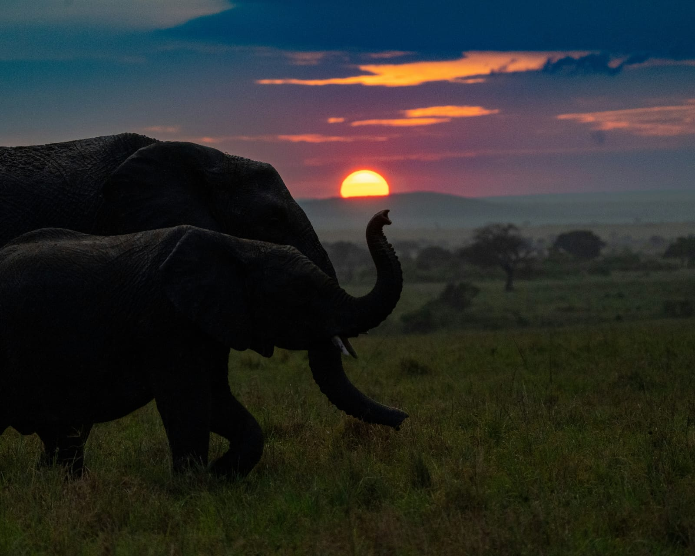

Luxury Safari Overview
10 Days Kenya Wildlife, Coast & Beach Luxury Safari
Discover the best of Kenya on an unforgettable ten-day luxury adventure combining spectacular wildlife, authentic culture and relaxing beach experiences.
Begin your journey in Amboseli National Park, famous for its magnificent elephant herds and spectacular views of Mount Kilimanjaro. Continue through the wilderness of Tsavo West and Tsavo East, two of Kenya's most iconic national parks.
Your journey then continues to the Kenyan Coast, where you will discover the history and culture of Mombasa Old Town and Fort Jesus before relaxing on the beautiful white sands of Diani Beach.
This premium itinerary combines luxury safari lodges, private wildlife experiences, coastal culture and Indian Ocean relaxation for an unforgettable Kenyan holiday.

